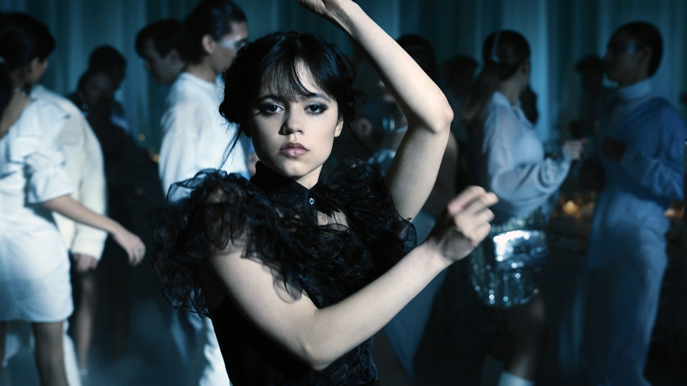
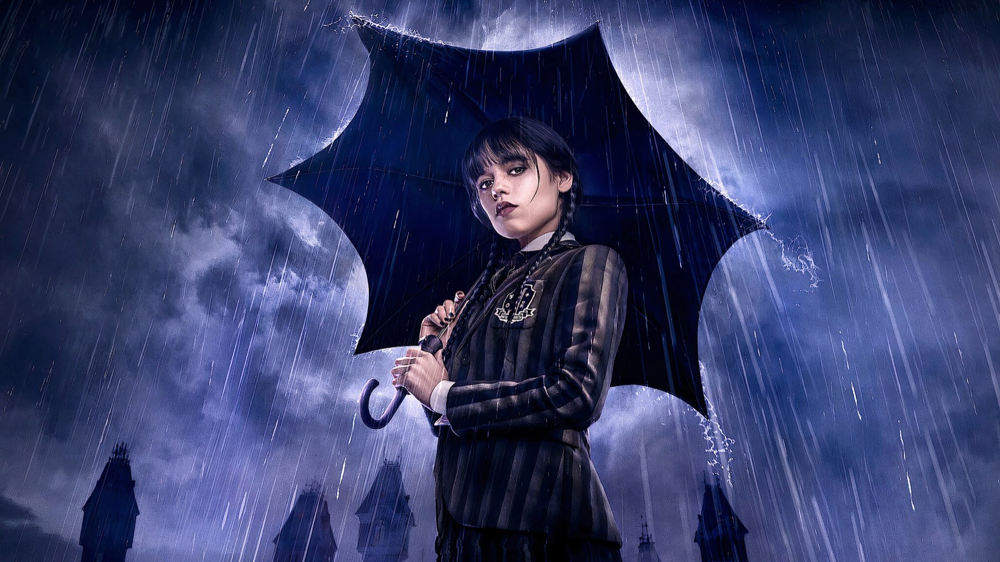
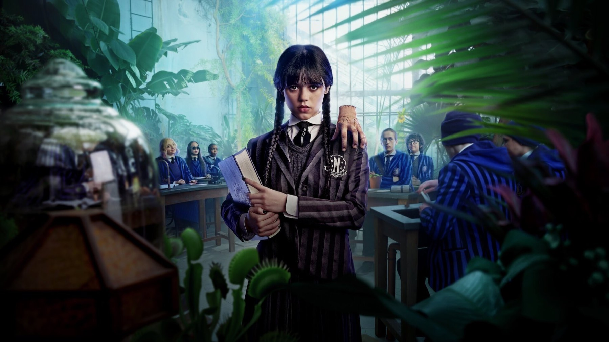

Wednesday – Stagione 1
Burton firma l'avvio, Jenna Ortega balla sulle note dei Cramps e la serie vola; poi il giallo prende il comando e il gotico si fa rassicurante
La prima stagione di Mercoledì ha un confine preciso, e lo si vede a occhio nudo: la quarta puntata. Fin lì dirige Tim Burton. E ogni inquadratura ha quel gusto per il macabro che fa sorridere invece di spaventare. Dopo, però, la regia passa ad altri e la storia si piega alle regole del giallo per ragazzi. La nostra tesi è semplice. La Mercoledì del 2022 si guarda per Jenna Ortega e per la metà firmata da Burton; il mistero che dovrebbe tenerla insieme è proprio la sua parte più fragile.
Di cosa parla la prima stagione
La scuola espelle Mercoledì Addams perché lei ha rovesciato dei piranha vivi nella piscina, così da punire i bulli che tormentavano il fratello Pugsley. Allora i genitori la iscrivono alla Nevermore Academy, il collegio per ragazzi fuori dal comune dove si erano conosciuti loro. Lì scopre di avere visioni, e le visioni la trascinano dentro una catena di omicidi che sconvolge la cittadina vicina. Senza rivelare il colpevole, basti sapere che l'indagine fa da filo rosso fino all'ultima puntata, intrecciata alle rivalità di collegio e ai primi amori.

La scena che vale il film
Il momento che tutti ricordano arriva nel quarto episodio, «Una triste serata», l'ultima di Burton. Al ballo della scuola Mercoledì entra in pista sulle note di Goo Goo Muck dei Cramps. Balla da sola, a scatti, con il volto immobile e gli occhi che non sbattono mai. La coreografia l'ha inventata Ortega, ispirandosi a Siouxsie Sioux e ai filmati dei locali goth degli anni Ottanta. L'ha girata con il Covid, scoperto proprio durante quelle riprese. Quel minuto scarso conta perché dice ciò che la serie non riesce più a dire dopo: Mercoledì si diverte, ma alle sue condizioni, e non chiede a nessuno di approvarla. È l'unica volta in cui il personaggio resta davvero estraneo alla festa, eppure ne diventa il centro.
Cosa funziona: Ortega e la mano di Burton
Ortega regge tutto con pochissimo. Lo capiamo già dai piranha: una vendetta spropositata per difendere il fratello, che basta a dirci chi è questa ragazza prima ancora che arrivi alla Nevermore. Gabriele Lippi su Sky TG24 scrive che «Ortega lavora per sottrazione», e il pregio sta proprio lì: le battute più feroci le pronuncia senza alzare la voce, quindi il sarcasmo arriva dal silenzio che lascia dopo. Burton intanto le costruisce intorno un mondo coerente, con la Nevermore girata nel castello Cantacuzino, sulle montagne romene di Bușteni, accompagnata dalla musica di Danny Elfman. Il pilota fa un lavoro raro: in pochi minuti sappiamo chi è la protagonista e perché la seguiremo.

Cosa non funziona: un giallo che si spiega da solo
Dal quinto episodio in poi, con Gandja Monteiro e poi James Marshall alla regia, la serie cambia passo. Invece di far indagare Mercoledì, le consegna le risposte. Nella sesta, durante una festa di compleanno a sorpresa, evoca l'antenata Goody Addams, e il fantasma le indica dove cercare; nella settima incontra nel bosco zio Fester, che le spiega che cos'è la creatura e come funziona. Il mistero quindi avanza per rivelazioni recapitate da qualcun altro, ma una detective così brillante meritava di arrivarci con la testa. Intanto i triangoli sentimentali occupano lo spazio che prima era dell'umorismo nero.
C'è poi un problema più profondo, e Chiara Guida su Cinefilos lo coglie bene: il messaggio sembra essere che va benissimo essere diversi, «purché si mantenga un minimo di normalità». Siamo d'accordo. La serie celebra l'emarginata e intanto la rende amabile, popolare, quasi rassicurante. Il ballo mostrava una ragazza che non chiede il permesso; la seconda metà, invece, sembra preoccuparsi soprattutto di farla accettare.
Due Mercoledì a confronto
Il confronto più interessante sta dentro il cast. Christina Ricci, che Mercoledì l'aveva interpretata al cinema in La famiglia Addams del 1991 e nel seguito del 1993, qui è Marilyn Thornhill, la professoressa di botanica che sorveglia il dormitorio. La Mercoledì di Ricci era una bambina sinistra dentro una famiglia che la capiva perfettamente, e la comicità nasceva dal contrasto con il mondo fuori. Quella di Ortega invece è un'adolescente sola, lontana dai suoi, che deve farsi spazio fra coetanei; per questo la serie diventa un racconto di formazione più che una commedia nera. Ricci però resta ai margini. Il dialogo fra le due versioni del personaggio rimane un'occasione mancata.
Rispetto alla seconda stagione
I numeri dicono un successo enorme ma un consenso tiepido. Nella prima settimana la serie ha totalizzato 341 milioni di ore di visione, il record di allora per una produzione Netflix in lingua inglese. Su Rotten Tomatoes la prima stagione si ferma però al 74% di recensioni positive su 102, mentre la seconda sale all'87% su 97; su Metacritic entrambe hanno 66 su 100 (dati letti a ottobre 2026). Per noi la prima resta la più riuscita come racconto: un mistero solo e la Nevermore vista per la prima volta. La seconda, uscita nell'estate del 2025 con più spazio alla famiglia Addams, è più ricca ma più dispersiva, come abbiamo scritto nella nostra recensione.
Per chi è
La consigliamo a chi cerca un gotico leggero, adatto anche ai ragazzi, e a chi vuole capire da dove nasce il fenomeno prima di passare al seguito. Chi si aspetta un vero giallo resterà a bocca asciutta; chi ama il Burton più giocoso, invece, ritroverà nelle prime quattro puntate alcune delle sue cose migliori degli ultimi anni. La stagione è in abbonamento su Netflix, e la serie è stata rinnovata per una terza nel luglio 2025.
Una prima stagione a due velocità: le puntate di Burton e il ballo della quarta sono televisione da ricordare, mentre il giallo della seconda metà la riporta nei binari del teen drama. Jenna Ortega però basta da sola a farla guardare.
Domande frequenti
Quanti episodi ha la prima stagione di Mercoledì?
Otto, usciti tutti insieme su Netflix il 23 novembre 2022.
Quali episodi ha diretto Tim Burton?
I primi quattro. La seconda metà della stagione è divisa tra Gandja Monteiro (quinta e sesta puntata) e James Marshall (le ultime due).
In quale episodio c'è il ballo di Mercoledì?
Nel quarto, «Una triste serata»: Mercoledì balla su Goo Goo Muck dei Cramps, con una coreografia ideata dalla stessa Jenna Ortega.
Dove vedere la prima stagione di Mercoledì?
In abbonamento su Netflix, insieme alla seconda (disponibilità al momento della pubblicazione).